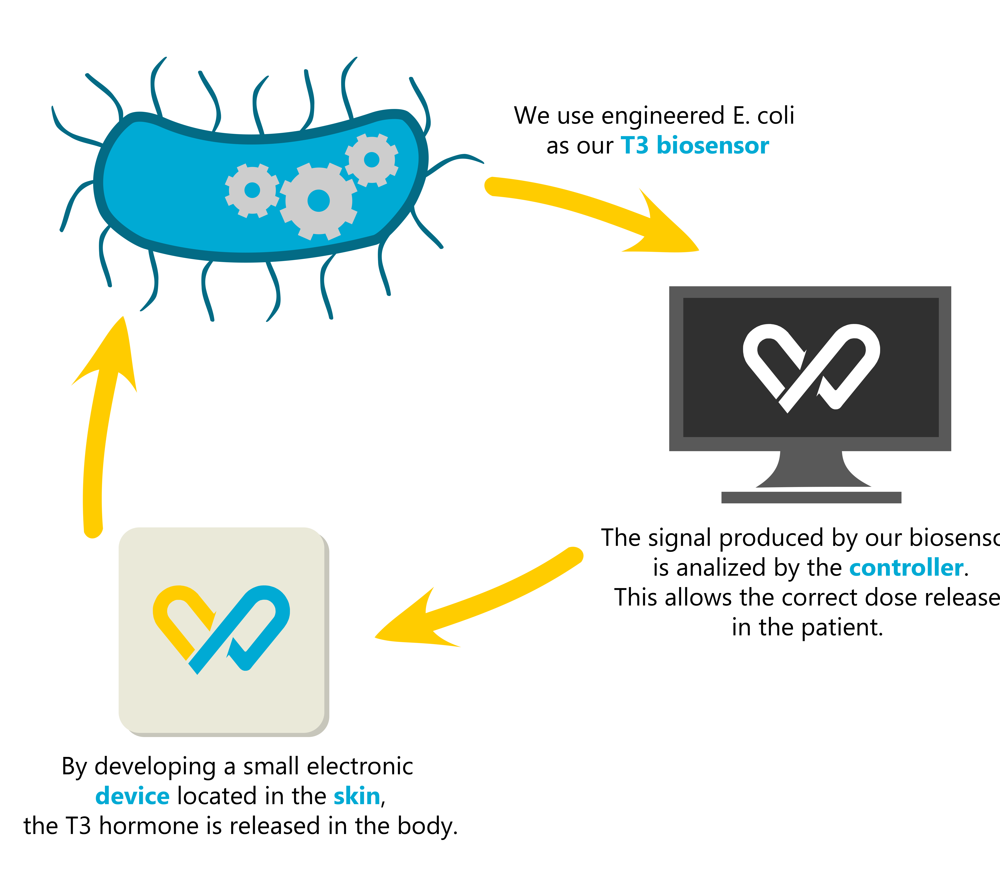

Our project consists on developing a device that can regulate thyroid hormone imbalances. This device will be designed to sense T3 at skin level through our engineered E.coli, which will contain an intein-mediated protein splicing linked to eGFP expression. A DIY turbidostat will be considered to maintain the cellular culture conditions constant. eGFP luminescence will be electronically sensed and , based on this measurement, a PDI control system will generate a feedback response so as to self-regulate and restore the normal levels of T3 hormone in the human body. On top of that, a platform with the database will be provided as a tool to help clinicians remotely monitor the levels of hormones.
Description
Thyroid disease is a global health problem that can hugely affect well-being, since thyroid hormones are essential for growth or regulation of energy metabolism, among others [1]. Although thyroid dysfunction is easily identifiable and treatable, dosage of the treatment at first stages is highly unspecific and patients must receive different amounts of drugs until their hormone level is stabilized [2].
Thyroid disease is hampered by abnormalities in the hypothalamic-pituitary-thyroid axis, leading to conditions as hypothyroidism or hyperthyroidism. The hypothalamic-pituitary-thyroid axis is also known as thyroid homeostasis or thyrotropic feedback control, as thyroid hormone release is regulated by a negative feedback control (see Figure 1) [3].
Skin is the targeted organ of numerous hormones, so it is not surprising that these hormones or its derivatives are found on skin. Regarding thyroid hormones, triiodothyronine (T3) has been proven to be found on sweat and, consequently, on skin [4].
Based on past approaches to external hormone regulation as the insulin pump, HORMONIC seeks to offer an artificial thyroid homeostasis, sensing the systemic amount of thyroid hormone and regulating as the thyrotropic feedback control would do [5]. Gathering recent advances in synthetic biology, control systems and electronics, we attempt to offer a patient-specific solution to the determination of dosage administration of pharmacs.
HORMONIC aims to quantify and release the needed amount of a drug so the thyroid homeostasis of the patient is kept in a healthy level through time. For that, our proposal is divided in three stages: the sensing part, which consists of an engineered E. Coli able detect T3 at the skin level and give a fluorescent response proportional to the detected T3; the controller, which is compound by an ARDUINO that has already implemented the response that has to be given to the sensed T3, and the releasing part, which in our case is a peristaltic pump that will answer to the guides of the controller.
The problems caused by the initial undefinition of a clear dosage for thyroid dysfunction seem to be a hot topic among affected people. Just by asking some familiars and acquaintances we realized about the relevance of this issue.
During the brainstorming sessions, we tackled concerns of our environment and tried to propose solutions involving synthetic biology. When the final decision needed to be given, we finally balanced our preferences towards HORMONIC because a great part of our team is coursing Biomedical Engineering, and our acquired knowledges seemed more useful on a therapeutic environment.
[1] Taylor, P. N., Albrecht, D., Scholz, A., Gutierrez-Buey, G., Lazarus, J. H., Dayan, C. M., & Okosieme, O. E. (2018). Global epidemiology of hyperthyroidism and hypothyroidism. Nature Reviews Endocrinology, 14(5), 301–316. doi:10.1038/nrendo.2018.18
[2]
[3] Dietrich, J. W., Landgrafe, G., & Fotiadou, E. H. (2012). TSH and Thyrotropic Agonists: Key Actors in Thyroid Homeostasis. Journal of Thyroid Research, 2012, 1–29. doi:10.1155/2012/351864
[4]
[5]